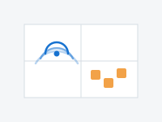

Yu (Charlie) Chan
Seeking PhD positions — applying December 2026!
I am a research assistant at the Robot Learning Lab,
National Taiwan University, advised by Prof. Shao-Hua Sun.
I am interested in tactile representation learning, robot manipulation, and robot learning.
I received my M.S. in Artificial Intelligence from National Yang Ming Chiao Tung University
(Presidential Award), advised by Prof. Yu-Chee Tseng
and Prof. Jen-Jee Chen. Before returning to research, I spent three years in industry —
Wi-Fi firmware at MediaTek and embedded ML at Novatek — and co-founded
Tera Thinker, an AI education startup.
Email /
GitHub /
CV
|
|
Research
I infer hidden physical state from indirect, non-visual sensing — Wi-Fi signals in my earlier work,
touch now — and use that inference to make robot manipulation robust under real-world uncertainty.
My current question: do the perception-level gains reported in tactile representation learning
actually survive to the policy level?
|
|
|
Implicit State Estimation via Video Replanning
Po-Chen Ko, Yu Chan, Yu-Hsiang Fu,
Chu-Rong Chen, Hung-An Chen, Shao-Xiang Yuan, Hsien-Jeng Yeh,
Wei-Chiu Ma,
Yilun Du,
Jiayuan Mao,
Shao-Hua Sun
Under review at CoRL 2026
arXiv
An adaptive video-based planning system that incorporates interaction-time feedback to handle
uncertainty: refining its latent state representation and filtering out failed plans, it adapts
without explicitly modeling hidden parameters. I led all real-world robot experiments.
|
|

|
Learning-Based WiFi Fingerprint Inpainting via Generative Adversarial Networks
Yu Chan, Pin-Yu Lin, Yu-Yun Tseng, Jen-Jee Chen,
Yu-Chee Tseng
IEEE ICCCN 2024
arXiv
Zero-shot Wi-Fi fingerprint inpainting with a shared-weight GAN discriminator, improving indoor
positioning accuracy by 20% over benchmarks and deployed in an industrial collaboration.
|
Open Source & Hands-On
Lab imitation-learning infrastructure.
Built RLLxLerobot, the lab's end-to-end
imitation-learning stack: teleoperation, dataset recording, training and evaluation scripts,
waypoint tooling, and hardware configuration for an AgileX Piper arm with a ROBOTIS OMY leader.
LeRobot hardware plugins.
Authored and published the
AgileX Piper follower
(safety-first: no startup lunge, slew-rate limiting), the
ROBOTIS OMY-L100 leader
(direct Dynamixel Protocol 2.0, no ROS 2), and an
OMY→Piper retargeting processor;
Dynamixel motor support merged upstream into
Hugging Face LeRobot.
3D printing & fabrication.
Designed and fabricated the physical experimental setups for the lab's real-robot research —
custom fixtures, mounts, and task objects for the CoRL 2026 submission's experiments.
A published sample design: Cube Earring on MakerWorld.
|
Experience
Research Assistant, Robot Learning Lab, National Taiwan University (2026–present)
AI Application Engineer, Novatek (2024–2026)
Wi-Fi R&D Software Engineer, MediaTek (2022–2024)
Co-Founder, Tera Thinker (2021–present)
|
|